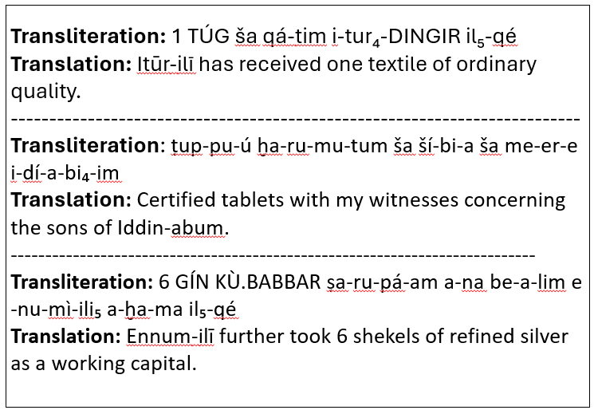

Translating Akkadian to English
Spring 2026 CSCI 5541 NLP: Class Project - University of Minnesota
TeamworkIsAllYouNeed
Joseph Mandell
Nicholas Pederson
Tianzhe Han
Ryota Tanaka
Joseph Mandell
Nicholas Pederson
Tianzhe Han
Ryota Tanaka
Based on the Kaggle competition “Deep Past Challenge: Translate Akkadian to English,” this project aims to develop an effective translation model for converting Akkadian transliterations into English using sequence-to-sequence methods. We fine tuned a ByT5 transformer model, which operates at teh bytel level and is well suited for handling low resource text like the Akkadian language. Hyperparameter tuning was performed using Weights & Biases (WandB). We managed to achieve a score of 28 on the competition metric, which approaches the scores of top-performing models.

The akkadian symbols are first transformed into transliterated text before being translated.
What did we do?
We are doing a challenge from Kaggle where we take in transliterations of Akkadian (ancient Middle Eastern) text and translate them to English. Our main objective is to build and train a deep learning language model to perform this translation task, meaning we are training a computer program to recognize patterns in these ancient words so it can automatically translate them for us. We are motivated by the fact that there is a large amount of Akkadian text that has been transliterated but not yet translated, and we believe that a deep learning approach can help us unlock the meaning of these ancient texts.
How is it done today, and what are the limits of current practice?
Currently, the translation of Akkadian text is done manually by scholars who have expertise in the language. This process is time-consuming and requires a deep understanding of the language and its grammar. Additionally, there are many transliterated texts that have not yet been translated due to the sheer volume of material and the limited number of experts available. The limits of current practice include the slow pace of translation and the potential for human error in interpreting the text.
Who cares? If we are successful, what difference will it make?
If we are successful, we will be able to help scholars and historians better understand the content of Akkadian text, which can provide valuable insights into the culture, society, and history of ancient Mesopotamia. Additionally, our work can contribute to the field of natural language processing by demonstrating an effective approach to translating low-resource languages.
We approached the task using a sequence to sequence transformer model based on byT5 architecture model. Unlike traditional NLP models, byT5 operates directly on byte-level input, which allows it to handle a wide variety of languages and scripts without the need for tokenization. We chose this approach because it has been shown to be effective in low-resource language settings, and we believed that it would be well-suited for the task of translating Akkadian text. Additionally, we implemented a custom training loop and experimented with different hyperparameters to optimize the performance of our model.
We thought this approach would be most successful because Akkadian as a language has unique symbols and meanings where tokenization can be difficult because the same 'letter' in a word can have different meanings. Thus we need to use a byte-level model that can learn the meaning of each symbol in context rather than relying on a fixed vocabulary of tokens. This approach is new in the sense that using this type of model for an ancient language with such a unique structure has not been widely explored.
What problems did we anticipate and encounter?
Sed ut perspiciatis unde omnis iste natus error sit voluptatem accusantium doloremque laudantium, totam rem aperiam, eaque ipsa quae ab illo inventore veritatis et quasi architecto beatae vitae dicta sunt explicabo.
How did you measure success? What experiments were used? What were the results, both quantitative and qualitative? Did you succeed? Did you fail? Why?
Nemo enim ipsam voluptatem quia voluptas sit aspernatur aut odit aut fugit, sed quia consequuntur magni dolores eos qui ratione voluptatem sequi nesciunt.
| Experiment | 1 | 2 | 3 |
|---|---|---|---|
| Sentence | Example 1 | Example 2 | Example 3 |
| Errors | error A, error B, error C | error C | error B |

How easily are your results able to be reproduced by others? Did your dataset or annotation affect other people's choice of research or development projects to undertake? Does your work have potential harm or risk to our society? What kinds? If so, how can you address them? What limitations does your model have? How can you extend your work for future research?